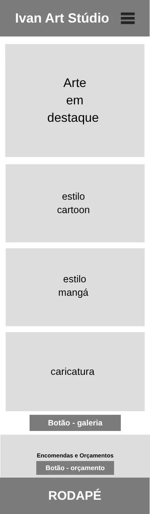
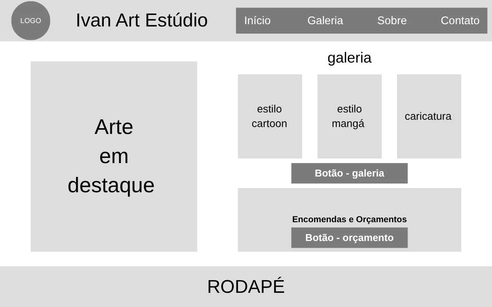

Nome do Site
Eu escolhi o nome Ivan Art Estúdio, esse nome porque quero construir um estúdio autoral de ilustrações, sem depender apenas de um nome solto, domínio opcional (artestudioivan.com).
Finalidade do Site
A finalidade do site é mostrar minhas artes ao público interessado, por meio de uma galeria com filtros por categoria/técnica, apresentação do processo criativo e formulário para encomendas/orçamentos.
Cenários
- Quando o pagamento é feito?
- Quantas alterações (revisões) eu posso pedir?
- Qual é o prazo de entrega?
Esquema de Cores
Cores do site:
- cabeçalho/rodapé: Azul Crayola (#0077FF)
- navegador: Marinha Real (#083676)
- corpo do site: Céu Pálido (#D2E7FF)
- fonte do corpo do site: Preto tinta (#001224)
- fonte de navegação: Alice Azul (#E0E5EB)
Tipografia
Usarei as seguintes fontes:
- títulos: Josefin Sans
- cabeçalho e rodapé: Josefin Sans
- corpo do site: Roboto
Wireframe (Mobile e Desktop)

